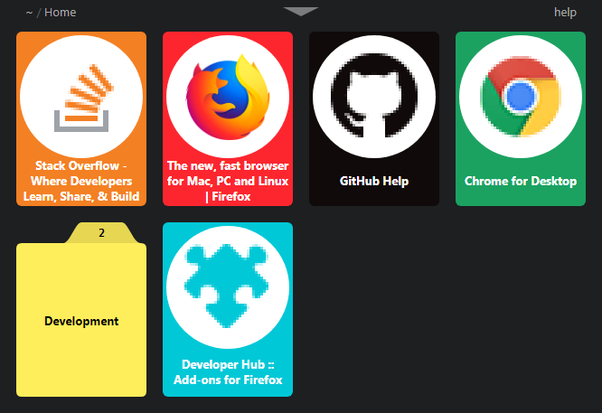
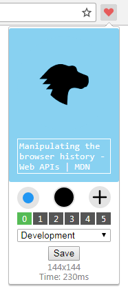

Just some hosting
I just use this to host images for my READMEs.

This is the New Tab page, a good amount of elements per row is 5, but 4 as in this image
is just better to show it off. I think it looks okay and that is good enough. Sadly a lot
of websites have low quality images. Maybe we should use 32x32 as the default resolution?
Otherwise the glorious 144x144 Firefox image makes everything else look bad.

This is the Browser Action where a user can create and update tiles. You can choose
two background colors, text as black or white, between two image sizes, between
up to 12 images and into which folder you want to save the tile.